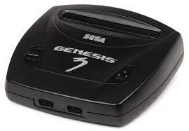

Sega Genesis
Mega Drive, conocida en diversos territorios de América como Genesis, es una clásica videoconsola de sobremesa de 16 bits desarrollada por Sega Enterprises, Ltd. Mega Drive fue la tercera consola de Sega y la sucesora de Master System. Compitió contra
la SNES de Nintendo, como parte de las videoconsolas de cuarta generación. La primera versión fue lanzada en Japón en 1988, sucedida por el lanzamiento en Norteamérica bajo el renombramiento de Genesis en 1989. En 1990, la consola
fue distribuida como Mega Drive por Virgin Mastertronic en Europa, por Ozisoft en Australasia, y por Tec Toy en Brasil. En Corea del Sur, el sistema fue distribuido por Samsung y conocido como la Super Gam*Boy (en hangul, 수퍼겜보),
y más tarde como Super Aladdin Boy (en hangul, 수퍼알라딘보이).